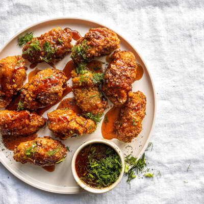

Dunked Wings

Description
Dunked Wings are a crowd-pleasing appetizer or snack that's perfect for game day,
parties, or anytime you're craving something crispy and flavorful.
These wings are coated in a savory and spicy breading made with a blend of spices and flour,
then deep-fried until they're crispy and golden brown.
They're served with a tangy and creamy dipping sauce that's made with Greek yogurt,
blue cheese, and a hint of hot sauce. Dunked Wings are easy to make and always a hit with friends and family.
Ingredients
- 2 lbs. chicken wings, tips removed and wings separated into flats and drumettes
- 1 cup all-purpose flour
- 2 tsp. garlic powder
- 2 tsp. onion powder
- 2 tsp. smoked paprika
- 2 tsp. salt
- 1 tsp. cayenne pepper
- 1 tsp. black pepper
- Vegetable oil, for frying
For the Dipping Sauce:
- 1/2 cup Greek yogurt
- 1/4 cup blue cheese crumbles
- 2 tbsp. mayonnaise
- 1 tbsp. lemon juice
- 1 tbsp. hot sauce
- Salt and pepper, to taste
Steps
-
In a large bowl, mix together the flour, garlic powder,
onion powder, smoked paprika, salt, cayenne pepper,
and black pepper.
-
Dredge the chicken wings in the flour mixture,
making sure to coat each wing thoroughly.
-
Heat the vegetable oil in a large,
deep skillet or Dutch oven over medium-high heat until it reaches 350°F.
-
Working in batches, fry the chicken wings in the hot oil for about 10-12 minutes,
or until they're crispy and golden brown.
Drain the wings on a wire rack or paper towels to remove any excess oil.
-
In a small bowl, mix together the Greek yogurt, blue cheese crumbles,
mayonnaise, lemon juice, hot sauce, salt, and pepper to make the dipping sauce.
-
Serve the Dunked Wings hot, with the dipping sauce on the side. Enjoy!
Return to homepage